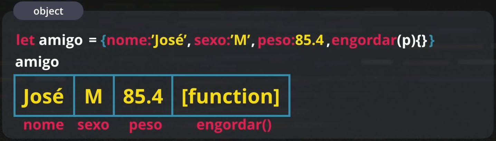

Nessa aula foram apresentados os próximos passos para aprender em JavaScript são:
Fora isso, foi apresentado os início dos principios dos objetos em JavaScript
Objetos são uma "evolução" dos arrays, onde além dos valores, podemos também declarar os identificadores.
Além das variáveis, nos objetos podemos guardar como atributos funções, que são chamados de métodos na POO.
